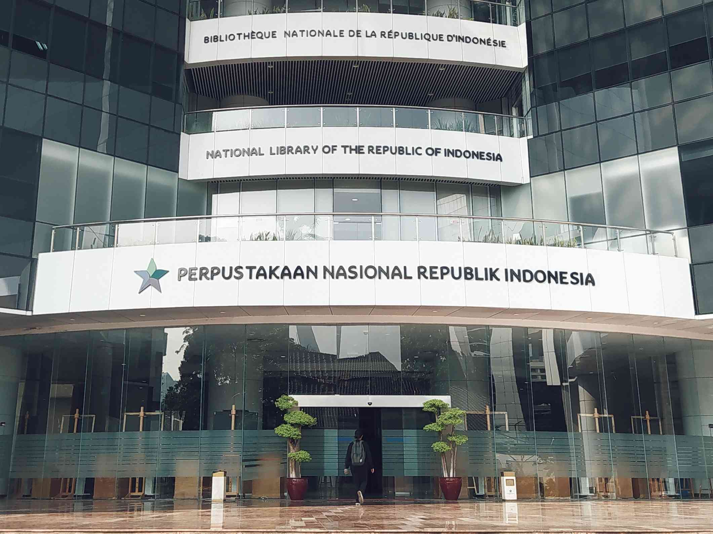

Perpustakaan Nasional Republik Indonesia (disingkat Perpusnas) adalah Lembaga Pemerintah Nonkementerian yang melaksanakan tugas pemerintahan dalam bidang perpustakaan yang berfungsi sebagai perpustakaan pembina, perpustakaan rujukan, perpustakaan deposit, perpustakaan penelitian, perpustakaan pelestarian, dan pusat jejaring perpustakaan, serta berkedudukan di ibu kota negara. Gedung Fasilitas Layanan Perpustakaan Nasional berlokasi di Jalan Medan Merdeka Selatan No.11, Jakarta dan sebagian besar perkantorannya di Jalan Salemba Raya No. 28A. Perpustakaan Nasional berada di bawah dan bertanggung jawab kepada Presiden. Pada tanggal 14 September 2017, Presiden Joko Widodo meresmikan Gedung Fasilitas Layanan Perpusnas baru yang merupakan perpustakaan nasional tertinggi di dunia (126,3 meter) dengan 24 lantai, ditambah tiga lantai parkir bawah tanah (basement).[1] Gedung fasilitas layanan baru Perpustakaan Nasional dibuat dengan anggaran tahun jamak dari 2013-2016 sebesar Rp465,2 miliar
Website Perpustakaan Nasional RI: Perpustakaan Nasional RI| E-Resource | Penjelasan |
|---|---|
| JStor | JSTOR (diucapkan jay-stor;[3] singkatan dari Journal Storage) adalah sebuah perpustakaan digital yang didirikan tahun 1995. Perpustakaan ini sebelumnya berisi terbitan jurnal akademik yang terdigitalisasi. Sekarang, koleksinya juga mencakup buku-buku dan sumber primer, serta terbitan jurnal terbaru.[4] Perpustakaan digital ini menyediakan layanan pencarian teks lengkap untuk lebih dari seribu jurnal. Lebih dari 7.000 institusi di 150 negara memiliki akses ke JSTOR. Kebanyakan bersifat langganan, tetapi sejumlah konten domain umum lama tersedia gratis. Pada tahun 2012, JSTOR meluncurkan program yang menyediakan akses gratis terbatas ke artikel-artikel lama untuk sarjana dan peneliti terdaftar |